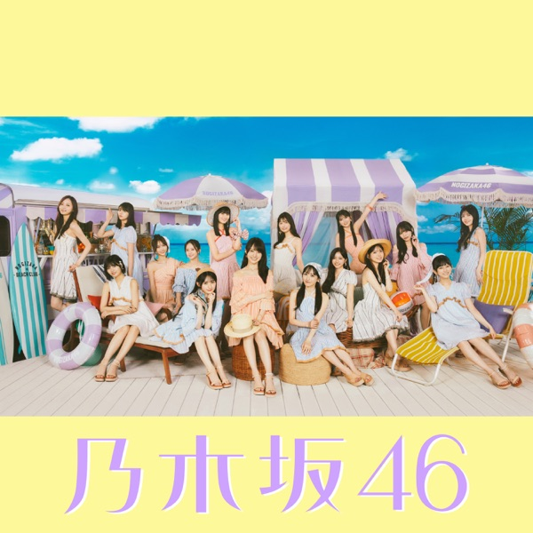

サカミチ
サカミチ不道徳な夏ふどうとくななつ

初収録リリース「Same numbers」のジャケット
乃木坂46
発売日：2025-07-30
収録：Same numbers（39thSG）
種別：アンダー曲
センター：金川紗耶
作曲：Atsushi Shimada、MiNE、川口進
編曲：佐々木裕
ライブ披露：34件
フォーメーション
上が後列、下が前列です。色付きがセンター。（参考データに基づく）
 伊藤理々杏
伊藤理々杏矢久保美緒
 松尾美佑
松尾美佑黒見明香
 吉田綾乃クリスティー
吉田綾乃クリスティー 佐藤璃果
佐藤璃果奥田いろは
柴田柚菜
 岩本蓮加
岩本蓮加田村真佑
金川紗耶
林瑠奈
参加メンバー（12名）
伊藤理々杏、岩本蓮加、吉田綾乃クリスティー、金川紗耶、黒見明香、佐藤璃果、柴田柚菜、田村真佑、林瑠奈、松尾美佑、矢久保美緒、奥田いろは
この曲が披露されたライブ（34件）
新しい順に20件まで表示しています（全34件）。
同じリリースの曲
Same numbers、真夏日よ、なぜ 僕たちは走るのか？、あの頃におかえり、不道徳な夏、ってかさ、君と猫